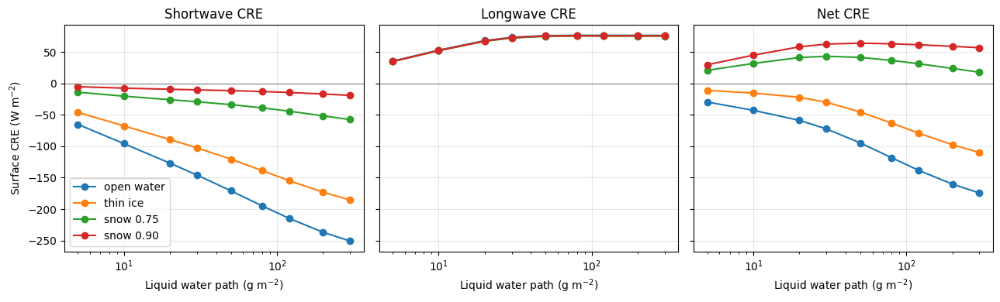

Multi-dimensional cloud experiment#
The surface cloud radiative effect (CRE) of a liquid water cloud over four Arctic surfaces, for liquid water paths (LWP) from 5 to 300 g m⁻², in the solar and thermal range. Surface type and LWP are dataset dimensions (How pyRadtran works), so the whole experiment is two run() calls and the analysis is plain xarray. Cloud input follows Clouds.
import logging
import matplotlib.pyplot as plt
import numpy as np
import pandas as pd
import xarray as xr
import pyradtran # registers the .pyradtran accessor
from pyradtran import Var
logging.getLogger("pyradtran").setLevel(logging.ERROR)
Configuration#
Two short configs in config/: broadband solar (300–4000 nm, output in mW m⁻²) and thermal (4–100 µm, W m⁻²), both with disort and reptran coarse and the subarctic-winter standard atmosphere afglsw with its own humidity and ozone. disort is used because the surface upward irradiance enters the net flux (twostr overestimates it, see Configuration).
print(open("config/arctic_cloud_experiment_solar.yaml").read())
# Broadband solar irradiance at the surface, for Arctic cloud radiative effect
# studies. Paths come from ~/.pyradtran/config.yaml (master config).
# Output is in mW m-2 (divide by 1000 for W m-2).
paths:
atmosphere_profile: afglsw # subarctic winter
simulation_defaults:
source: solar
rte_solver: disort # twostr overestimates eup by ~15 %
mol_abs_param: reptran coarse
wavelength_nm: [300, 4000]
integrate_wavelength: true
output_columns: [edir, edn, eup]
output_altitudes_km: [0.0]
h2o_mm: null # keep the humidity of the profile
ozone_du: null # keep the ozone of the profile
execution:
max_workers: 8
timeout_seconds: 300
cleanup_temp_files: true
output:
filename_prefix: arctic_cloud_experiment_solar
filename_suffix: .nc
Surfaces and clouds#
Surface |
Shortwave albedo |
Longwave emissivity |
Surface temperature |
|---|---|---|---|
Open water |
0.07 |
0.987 |
271.35 K (freezing sea water) |
Thin ice (nilas, young ice) |
0.30 |
0.980 |
265 K |
Snow-covered sea ice |
0.75 |
0.985 |
257.2 K |
Snow-covered sea ice, fresh snow |
0.90 |
0.991 |
257.2 K |
In the thermal range libRadtran takes the emissivity as albedo = 1 − ε. The cloud is a homogeneous liquid layer from 0.5 to 1.0 km with 10 µm effective radius; its liquid water content is LWC = LWP / 500 m, at most 0.6 g m⁻³. LWP = 0 has no cloud (NaN water content) and is the clear-sky reference. The sun is at 72° zenith angle (78° N, 4 April, noon).
surfaces = ["open water", "thin ice", "snow 0.75", "snow 0.90"]
albedo_sw = [0.07, 0.30, 0.75, 0.90]
emissivity = np.array([0.987, 0.980, 0.985, 0.991])
t_surface = [271.35, 265.0, 257.2, 257.2] # K
lwp = np.array([0, 5, 10, 20, 30, 50, 80, 120, 200, 300.0]) # g m-2
cbh, cth = 0.5, 1.0 # km
lwc = np.where(lwp > 0, lwp / ((cth - cbh) * 1000), np.nan) # g m-3
ds = xr.Dataset(
coords={
"time": [pd.Timestamp("2024-04-04 12:00")],
"latitude": ("time", [78.0]),
"longitude": ("time", [0.0]),
"surface": surfaces,
"lwp": lwp,
},
data_vars={
"albedo_sw": ("surface", albedo_sw),
"albedo_lw": ("surface", 1 - emissivity),
"t_surface": ("surface", t_surface),
"lwc": ("lwp", lwc),
"cbh": ("lwp", np.full(lwp.size, cbh)),
"cth": ("lwp", np.full(lwp.size, cth)),
},
)
ds
<xarray.Dataset> Size: 600B
Dimensions: (surface: 4, lwp: 10, time: 1)
Coordinates:
* time (time) datetime64[ns] 8B 2024-04-04T12:00:00
latitude (time) float64 8B 78.0
longitude (time) float64 8B 0.0
* surface (surface) <U10 160B 'open water' 'thin ice' ... 'snow 0.90'
* lwp (lwp) float64 80B 0.0 5.0 10.0 20.0 ... 80.0 120.0 200.0 300.0
Data variables:
albedo_sw (surface) float64 32B 0.07 0.3 0.75 0.9
albedo_lw (surface) float64 32B 0.013 0.02 0.015 0.009
t_surface (surface) float64 32B 271.4 265.0 257.2 257.2
lwc (lwp) float64 80B nan 0.01 0.02 0.04 0.06 0.1 0.16 0.24 0.4 0.6
cbh (lwp) float64 80B 0.5 0.5 0.5 0.5 0.5 0.5 0.5 0.5 0.5 0.5
cth (lwp) float64 80B 1.0 1.0 1.0 1.0 1.0 1.0 1.0 1.0 1.0 1.0Run#
One solar and one thermal run cover all 40 combinations of surface and LWP.
cloud = dict(cloud_wc_var="lwc", cloud_top_var="cth", cloud_bottom_var="cbh")
run = dict(save_to_file=False, show_progress=False)
solar = ds.pyradtran.run(
config_path="config/arctic_cloud_experiment_solar.yaml",
params={"albedo": Var("albedo_sw")},
**cloud, **run,
).isel(time=0, altitude=0)
thermal = ds.pyradtran.run(
config_path="config/arctic_cloud_experiment_thermal.yaml",
params={"albedo": Var("albedo_lw"), "sur_temperature": Var("t_surface")},
**cloud, **run,
).isel(time=0, altitude=0)
print("failed points:", int((solar.status != 0).sum() + (thermal.status != 0).sum()))
failed points: 0
Cloud radiative effect#
The CRE is the cloudy minus the clear-sky net irradiance at the surface,
Solar output is in mW m⁻² and is divided by 1000 before the two bands are added (units).
net_sw = (solar.edir + solar.edn - solar.eup) / 1e3 # mW m-2 -> W m-2
net_lw = thermal.edn - thermal.eup # W m-2
cre = xr.Dataset({
"shortwave": net_sw - net_sw.sel(lwp=0),
"longwave": net_lw - net_lw.sel(lwp=0),
})
cre["net"] = cre.shortwave + cre.longwave
cre = cre.sel(lwp=lwp[1:]) # drop the clear-sky reference
cre.net.to_pandas().round(0)
| lwp | 5.0 | 10.0 | 20.0 | 30.0 | 50.0 | 80.0 | 120.0 | 200.0 | 300.0 |
|---|---|---|---|---|---|---|---|---|---|
| surface | |||||||||
| open water | -30.0 | -43.0 | -59.0 | -72.0 | -95.0 | -118.0 | -138.0 | -160.0 | -174.0 |
| thin ice | -11.0 | -15.0 | -22.0 | -30.0 | -45.0 | -63.0 | -79.0 | -98.0 | -110.0 |
| snow 0.75 | 21.0 | 32.0 | 41.0 | 43.0 | 41.0 | 37.0 | 31.0 | 24.0 | 18.0 |
| snow 0.90 | 30.0 | 45.0 | 58.0 | 63.0 | 64.0 | 63.0 | 62.0 | 59.0 | 57.0 |
fig, axes = plt.subplots(1, 3, figsize=(13, 4), sharey=True)
for ax, name in zip(axes, ["shortwave", "longwave", "net"]):
for i, surface in enumerate(surfaces):
ax.plot(cre.lwp, cre[name].sel(surface=surface), "o-", color=f"C{i}", label=surface)
ax.axhline(0, color="0.5", lw=0.8)
ax.set_xscale("log")
ax.set_xlabel("Liquid water path (g m$^{-2}$)")
ax.set_title(f"{name.capitalize()} CRE")
ax.grid(alpha=0.3)
axes[0].set_ylabel("Surface CRE (W m$^{-2}$)")
axes[0].legend()
fig.tight_layout()

Interpretation#
Longwave. The cloud warms the surface by emitting downward. The longwave CRE rises steeply with LWP, reaches about 90 % of its maximum (76 W m⁻²) at LWP ≈ 20 g m⁻² and is saturated beyond about 50 g m⁻², where the cloud emits as a blackbody. It differs by less than 1 W m⁻² between the surfaces here, because all four share one atmosphere and emissivities near 1: at the surface the longwave CRE is essentially the change in downward emission. In reality warmer surfaces come with warmer, moister air, which raises the clear-sky downward longwave and lowers the longwave CRE.
Shortwave. The cloud cools the surface by reflecting sunlight. The cooling grows with LWP without saturating in this range and scales with the absorbed fraction 1 − α: at LWP = 300 g m⁻² it is −251 W m⁻² over open water and −19 W m⁻² over snow with albedo 0.9. Multiple reflections between a bright surface and the cloud base return much of the reflected light, which further weakens the cooling over snow.
Net. With the sun at 72° the shortwave cooling outweighs the longwave warming over open water and thin ice at every LWP, so even a thin cloud (5 g m⁻²) cools these surfaces. Over snow the longwave term dominates and the cloud warms the surface. The warming peaks near 30–50 g m⁻², where the longwave CRE saturates, and declines for thicker clouds as the shortwave cooling keeps growing.
The sign of the net CRE therefore depends on surface albedo, solar zenith angle and LWP together. Reproducing Shupe & Intrieri (2004) maps where it changes sign.